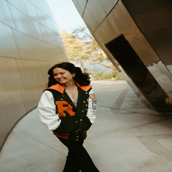
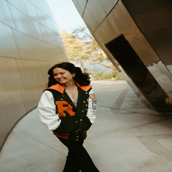
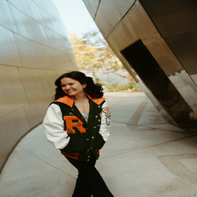

Peyton Greenberg
As a current college student, I am driven by a strong desire to succeed and possess an excellent work ethic. Throughout my academic journey, I have consistently demonstrated a passion for music and a commitment to personal growth. Additionally, I have gained valuable experience in interacting with diverse individuals, leading musical groups, and continuously honing my skills. One of my key strengths lies in my exceptional interpersonal and communication skills. I have effectively interacted with people from various backgrounds and levels, which has allowed me to develop a deep understanding of different perspectives. This skill has been particularly advantageous when leading groups of musicians, as it enables me to create a collaborative and supportive environment. In terms of work experiences, I have gained valuable insights and developed important skills through diverse roles. Working at El Pollo Loco, I learned the importance of taking direction and executing tasks efficiently. This experience taught me to be reliable, responsible, and adaptable in a fast-paced environment. I honed my analytical abilities by managing data entry tasks, ensuring accuracy and attention to detail. In my role as a pet caretaker, I not only demonstrated my sense of responsibility but also showcased my dedication to providing compassionate care. I actively engaged with pet owners, addressing their concerns and providing updates on their pets' well-being. This experience enhanced my communication skills and reinforced my commitment to delivering excellent service. During a summer internship at LuLaRoe, I further expanded my skillset and demonstrated my willingness to learn and excel. I was exposed to various aspects of the business, including inventory management, customer service, and sales support. I eagerly absorbed new information, embraced challenges, and actively contributed to team efforts. This internship solidified my belief in the value of continuous improvement and the importance of a strong work ethic. In conclusion, as a current college student, I bring a strong song will to succeed and an excellent work ethic to any endeavor. My experiences interacting with diverse individuals, leading musical groups, and dedicating myself to personal growth have shaped me into a well-rounded individual. With exceptional interpersonal and communication skills, a strong desire to learn and excel, and a reliable and responsible nature, I am confident in my ability to contribute positively to any team or organization.
Experience
Summer Intern
• Maintained an organized personnel files
• Pulled inactive and terminated employee files to archive
• Audited I9 and EEOC forms
Personnel Pet Caretaker
• Cleaned and maintained pet rooms and kitchen
• Provided care for thirteen(13) cats and four (4) dogs, most with special dietary restrictions
Education
UC Riverside
Portfolio
.jpg)
.jpg)
.jpg) 

